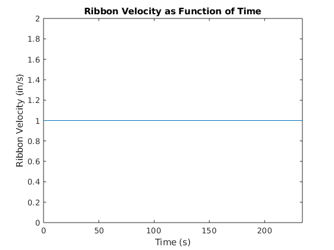

Contents
Connor McGarty, cmcgarty - HW01: CONTINUOUS LOADING OF A RIBBON ON A SPOOL
File: cmcgarty_EE254_HW01_RIBBON_LOADING.m
Submission Date: Tuesday, January 28, 2020 - 1/29/20
Problem: Calculate angular velocity of a spool loading a strip of ribbon such that the ribbon moves at a constant velocity. Plot velocity as a function of time. Plot omega as a function of time. Plot omega as a function of layer count.
% INITIAL CONDITIONS clc;clear;close all; % clean up v_constant = 1; % in/s (constant) r_min = .5; % in r_max = 1; % in thickness_material = .01; % in - thickness of the ribbon % TIME PARAMETERS t_init = 0; % s t_delta = .1; % s t_vector = []; % s theta_init = 0; % radians theta_time = [theta_init]; % radians omega_init = v_constant / (r_min); % w(t=0), rad/s omega_time = [omega_init]; % w(t), rad/s
Solution
iteration = 1; % index variable r_current = r_min; t_current = t_init; done = false; % while flag omega_previous = omega_init; layer_count = 0; % # of times ribbon has wrapped competely around spool layer_time = [layer_count]; while (done == false) iteration = iteration + 1; t_current = t_current + t_delta; % increment time by time delta t_vector(iteration) = t_current; omega_current = v_constant / (r_current); omega_time(iteration) = omega_current; % add new data point to omega vector % calculate change in position/rotation of the feed (theta) theta_time(iteration) = theta_time(end) + omega_time(iteration) * t_delta; % increase radius by material thickness for every full revolution: if (theta_time(iteration) >= layer_count * (2 * pi) + (2 * pi)) r_current = r_current + thickness_material; % inc. radius by material thickness layer_count = layer_count + 1; end if (r_current >= r_max) % if we have reached max radius we're "out of ribbon" done = true; % signal to stop while-loop end layer_time(iteration) = layer_count; % for ease of plotting later end % Plot velocity as function of time v_vector = v_constant * ones(size(t_vector)); figure; plot(t_vector, v_vector); xlabel('Time (s)'); ylabel('Ribbon Velocity (in/s)'); title('Ribbon Velocity as Function of Time'); xlim([0,t_vector(end)]); % Plot omega as function of time figure; plot(t_vector, omega_time); xlabel('Time (s)'); ylabel('Angular Velocity, omega (rad/s)'); title('Angular Velocity of Spool as Function of Time'); xlim([0,t_vector(end)]); % Plot omega as function of layer_count: figure; plot(layer_time, omega_time); xlabel('Layer Count'); ylabel('Angular Velocity, omega (rad/s)'); title('Omega as a Function of Layer Count'); xlim([0,layer_count]);